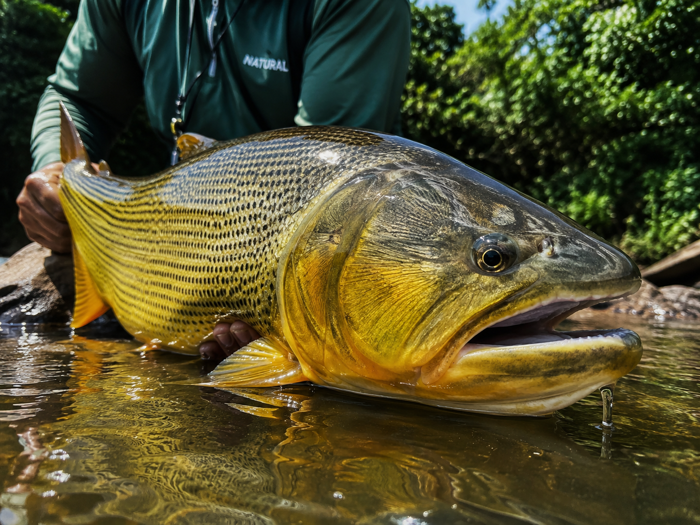

Vídeo de demonstração
Assista ao vídeo com demonstrações de técnicas específicas para cada tipo de peixe.
Conheça as principais espécies de peixes esportivos, características e recordes.
O Brasil possui uma rica diversidade de peixes esportivos em águas doces e salgadas, atraindo pescadores do mundo inteiro.

Os rios e represas brasileiras abrigam espécies de grande porte e combatividade.
Assista ao vídeo com demonstrações de técnicas específicas para cada tipo de peixe.
| Nome Popular | Nome Científico | Peso Máximo | Melhor Isca | Região |
|---|---|---|---|---|
| Tucunaré | Cichla spp. | 12 kg | Iscas artificiais de superfície | Bacia Amazônica, represas do Sudeste |
| Dourado | Salminus brasiliensis | 25 kg | Iscas naturais e artificiais | Bacia do Prata, Pantanal |
| Pirarara | Phractocephalus hemioliopterus | 80 kg | Peixes inteiros, minhocuçu | Bacia Amazônica |
| Robalo | Centropomus spp. | 15 kg | Shads, camarões artificiais | Litoral brasileiro |
| Traíra | Hoplias malabaricus | 5 kg | Iscas de meia água | Lagoas e rios de todo Brasil |
Mapa dos principais pontos de pesca esportiva no Brasil